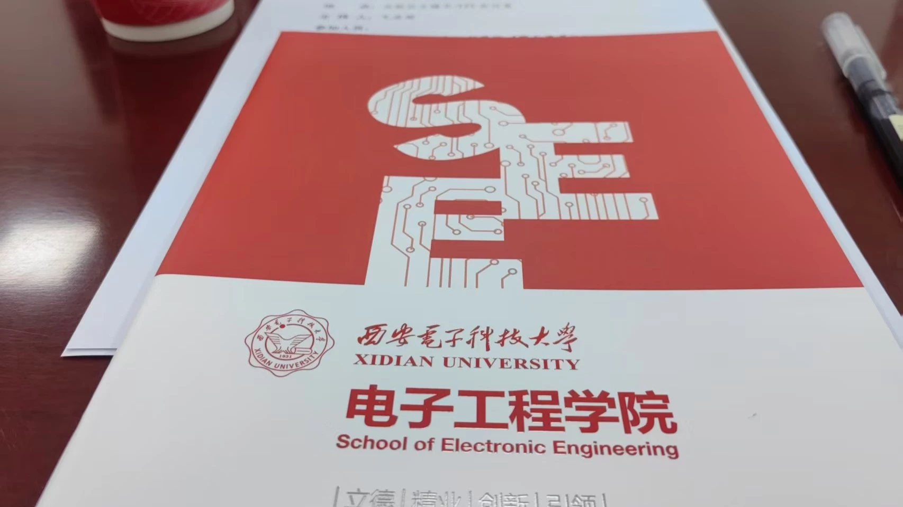
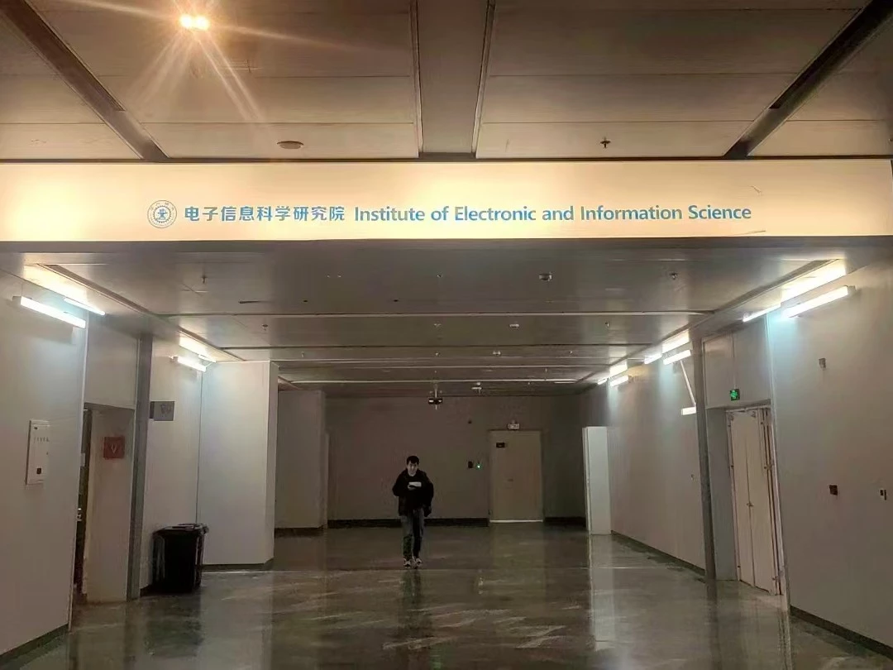

突然告知要代表学院出差
事情是这样的，突然接到通知让我和其他几位（我是某校级科创协会会长，其他一块的有类似学生会主席、研会主席、团副这种）去西安交流，于是我请了假、上了车，去了机场。一切是那么的突然，似乎没给我纠结的时间，但是我听到“出差补贴”四个字的时候直接蹦了起来，学生群体真好拿捏呀。
出行前的轶事：刚好DSP课点名了，我给李教授说请假了，结果教授说：
不相信，班里总有不少人假冒假条，一点到名就说请假。
我倒是没翘过课被抓，老师讲的比较带感，唯独我对此不感兴趣，甚至不知道自己是不是真正喜欢现在的EE专业。不过这次“请假”确实是真的，毕竟我都上飞机了。于是，迎着落日余晖和熟悉的干燥的冷气，我到了西安，感受到熟悉却又陌生的气息。
西安的东西和我家很像，街角的包子铺、肉夹馍，面条饺子之类的，却都是我喜欢吃的东西。酒店有健身房，倒也是不错。
西电交流
首日，由于我们是第一批，天大寒、砚冰坚，雨夹雪实在有些冷人了。起初进不去，找了迪卡侬取取暖。首日去了西电的研究生校区进行交流，后来发现我们的交流具有现实意义——学硕、专硕与工程博士的区分设立。这里的冬天夹杂了一份秋的踪影，地上金黄色的落叶飞舞着。这段时光或许是人生里很惬意的时光之一了，跟着老师和师兄们，在迪卡侬躲避寒风，品尝泡馍……

西交交流——创新港，偷摸鱼
好吧这次就没资格上桌了，于是校园走走，嗯，还挺好的其实。

瞎逛
其实这个地方来了很多次，所以也不知道逛啥，会了会老友（我们仨），然后和大部队一块去了趟省博物馆、大唐不夜城啥的，买了一堆纪念币，除此之外就…就只是吃吃吃了。
结语
好吃，太冷，太干，下次不来了。
当初若选大学的时候来了西交，那可能会有些不一样；不过我不后悔来我的母校，因为我这次访问的时候，他们说西交压力太大了。